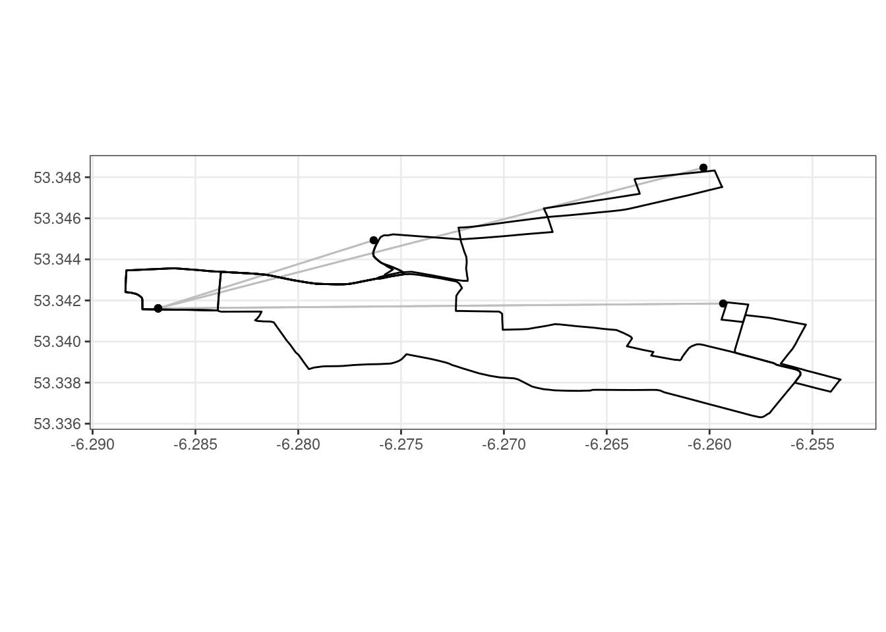

4 Basic CVRPTW Example
This example is for the CVRPTW (Capacitated Vehicle Routing Problem with Time Windows) model.
A classic CVRPTW has a heterogeneous fleet. This means we need only specify the size of the vehicle and the number of vehicles available. The other aspect of this model is to include the location of the depot. The CVRPTW is costed differently to the CVRP. The objective is still to minimise the number of vehicles used, but also to minimise the total time. The classic CVRP aims to minimise the number of vehicles, then the total distance travelled. The CVRPTW has time windows on each point. In this schema, we allow you to omit windows from points if needed.
4.1 Data
The data used in this example is a list of 10 pubs in Dublin, Ireland with their associated X and Y coordinates and quantities (amount added to a vehicle at each location).
4.2 Running the example
library(iceR)Execute the example as follows:
4.2.1 Create an apiHelper object with the model type you’d like to solve
api <- new("apiHelper", modelType = 'cvrptw-acyas3nzweqb', '../../config.json')4.2.2 Create the model and add some data to it
# Create the model
sr <- new (CVRPTW.SolveRequest)
sr$model <- new (CVRPTW.CVRPTW)
# Load the data
data <- read.csv('../../sample_data/publist_orders.csv')[1:10,]
# Add the data to the model
makePoint <- function(i){
g <- new (CVRPTW.Geocode)
g$id <- data$id[i]
g$x <- data$X[i]
g$y <- data$Y[i]
g$quantity <- data$quantity[i] # zero by default
return (g)
}
# NOTE: quantity in Geocode above is zero by default.
# In this example, the quantity is provided with the data but can be set for each point here too.
# For example, each point can be set to take up 20 units. If the maximum capacity of the vehicle is set to 100
# we know that we don't need more than 2 vehicles but also that we can't use less than 2 vehicles.
# data$quantity <- 20
sr$model$points <-sapply(2:nrow(data), makePoint)
# Make the first location the depot (and the balance of the locations will be the visit points)
sr$model$depot <- makePoint(1)
# Add windows to the data (just using a traditional loop)
# The windows are randomly split into "morning" and "afternoon" windows.
# Note that the windows are measured in minutes in this schema.
morning <- c(8*60, 12*60) #08:00 to 12:00
afternoon <- c(12*60, 16 * 60) #12:00 to 16:00
for(i in 1:length(sr$model$points)){
if(i %% 2 == 0){
sr$model$points[[i]]$windowStart <-morning[1]
sr$model$points[[i]]$windowEnd <- morning[2]
}else{
sr$model$points[[i]]$windowStart <-afternoon[1]
sr$model$points[[i]]$windowEnd <- afternoon[2]
}
}
# Set the other relevant information
sr$model$NumberOfVehicles <- 3
sr$model$VehicleCapacity <- 100
sr$solveType <- 0 # 0 for optimise, 1 for evaluate, 2 for reoptimise
# Set the distance type to use the road network
sr$model$distancetype <- 1 # 1 for road network, 2 for euclidean, 3 for haversine
# View the model in plain-text format (string or JSON)
sr$model$toString() %>% cat
sr$model$toJSON() %>% cat4.2.3 Submit the model to the API
requestID <- api %>% postSolveRequest(sr) 4.2.4 Retrieve the model response
resp <- api %>% getResponse(requestID)4.2.5 Look at the result
# Get the solve time
solveTime <- api %>% getSolveTime(requestID)Solve time: 0.007s
# Tabulate the data in native-R format
tab <- resp %>% tabulate(sr)
tab$nodes %>% head # just inspect the head of the output locationId quantity arrivalTime vehicleId sequence x
1 Guinness Storehouse 0 0.000 1 1 -6.286811
2 The Oval Bar Dublin 100 720.000 1 2 -6.260296
3 Guinness Storehouse 100 722.781 1 3 -6.286811
4 Guinness Storehouse 0 0.000 2 1 -6.286811
5 The Brazen Head 100 480.000 2 2 -6.276332
6 Guinness Storehouse 100 481.433 2 3 -6.286811
y
1 53.34161
2 53.34846
3 53.34161
4 53.34161
5 53.34493
6 53.34161tab$edges %>% head # just inspect the head of the outputSimple feature collection with 6 features and 8 fields
Geometry type: LINESTRING
Dimension: XY
Bounding box: xmin: -6.288402 ymin: 53.33631 xmax: -6.253628 ymax: 53.34833
CRS: NA
fromId toId distance vehicleId fx fy
1 Guinness Storehouse The Oval Bar Dublin 5.560 1 -6.286811 53.34161
2 The Oval Bar Dublin Guinness Storehouse 6.080 1 -6.260296 53.34846
3 Guinness Storehouse The Brazen Head 2.483 2 -6.286811 53.34161
4 The Brazen Head Guinness Storehouse 2.858 2 -6.276332 53.34493
5 Guinness Storehouse Davy Byrne's pub 8.138 3 -6.286811 53.34161
6 Davy Byrne's pub Guinness Storehouse 10.151 3 -6.259340 53.34185
tx ty geometry
1 -6.260296 53.34846 LINESTRING (-6.286813 53.34...
2 -6.286811 53.34161 LINESTRING (-6.260239 53.34...
3 -6.276332 53.34493 LINESTRING (-6.286813 53.34...
4 -6.286811 53.34161 LINESTRING (-6.276116 53.34...
5 -6.259340 53.34185 LINESTRING (-6.286813 53.34...
6 -6.286811 53.34161 LINESTRING (-6.259172 53.34...# Plot the data (ggplot or leaflet)
resp %>% plotResponse(sr) # ggplot 
resp %>% plotResponseLeaflet(sr) # leaflet (if it's mappable)